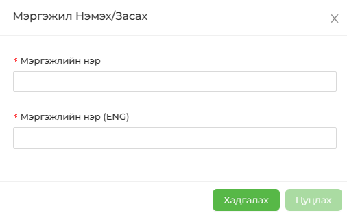

Энэхүү хэсэгт ажилчдын мэргэжлийн дэлгэрэнгүйг бүртгэнэ. Тухайн ажилтан ямар боловсролыг хаана эзэмшсэнийг бид дээр бүртгэсэн. Ямар мэргэжил эзэмшсэн бэ? Гэдгийг уг хэсэгт оруулж өгөх юм. Мэргэжлийн нэр шинээр нэмэхдээ МЭРГЭЖИЛ НЭМЭХ товчийг дарахад дараах цонх гарч ирнэ.
